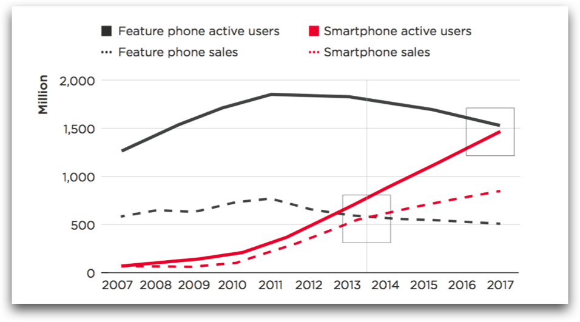

What
This website documents the ongoing work by the Mobile Opportunity project team at Mozilla, in partnership with GSMA.
This is a multidisciplinary research project studying technology and design approaches for greater participation in mobile digital life.
We are especially interested in empowering new smartphone users to create and distribute locally relevant mobile apps. During 2014, this team will be studying motivations and constraints for creation creation in emerging digital economies, then prototyping and testing several software and teaching hypotheses in order to find solutions. We will present our findings at Mobile World Congress 2015.
Why

Worldwide, sales of web-enabled "smartphones" have already surpassed feature phones. Low-cost smart devices, such as the Firefox OS / Spreadtrum device, are coming within reach for people at the bottom of the economic pyramid. And in 2017, active smartphone usage is predicted to surpass feature phone usage. 
For first-time smartphone buyers, apps and content are a killer feature. For network providers, they can drive subscriptions, data, and revenue from operator services. Yet a lack of skills and infrastructure means that there is latent, unmet demand for content that takes account of language, dialect and culture.
At the same time, we believe that the ability for individuals in a digital economy to add value to that digital economy will be essential for long-term, equitable development. In some countries, such as Bangladesh, market forces alone are unlikely to lead to optimal outcomes.
To close this “skills and content” gap, governments, NGOs and donors are inclined to invest in hubs, incubators, accelerators, and start-up garages that mirror assumptions about entrepreneurship from the experience of developed countries. Yet these models cannot kickstart digital economic development, or fill the content and skills gap, on their own. More ambitious, more scalable solutions will be required.
In this project we will seek greater insights on the following questions: What technology and practice innovations can we introduce to benefit both the content ecosystem and also global digital inclusion goals? How can we put the power to participate in the digital economy in more hands, in more places? How can we lower the bar to make and distribute local apps and content? How can we unleash entrepreneurial innovation, at massive scale, among mobile users who do not have access to bank officers, ATMs, or even a computer?
Adoption patterns, usage patterns, developer segmentation, distribution and monetization models will differ worlwide. While power laws, network effects, and other facts of nature will lead to some global constants—and some global technology norms—we believe that people who are only now coming online should have a stake in the development of their digital environment.
How
Please see our public goals, approach and plan to understand the process we will use for this project. We welcome contributions, so feel free to get in touch.
When
This project is starting in June 2014, and is expected to continue until at least April 2015, at which point we will perform a high-level assessment about next steps.
Who
This is a Mozilla-led project involving a broad set of partners, including the GSMA.